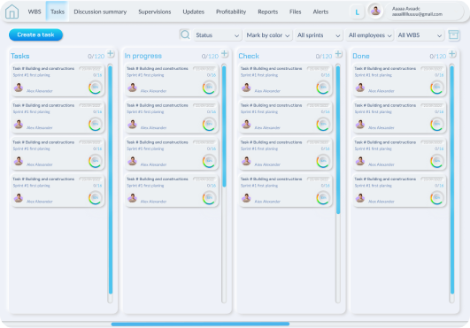
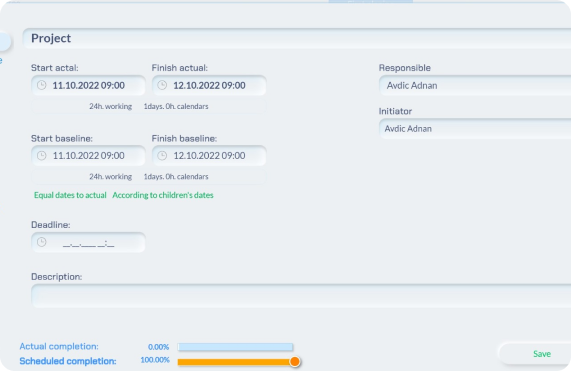
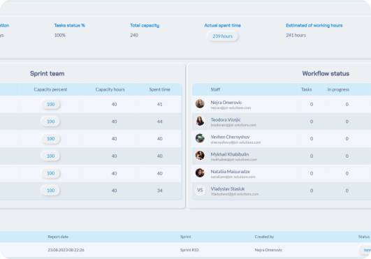
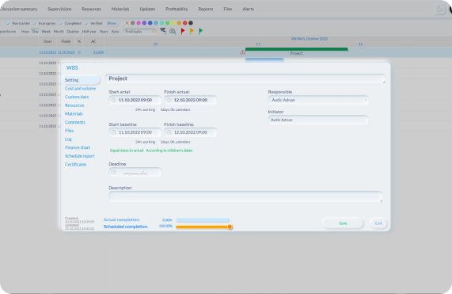
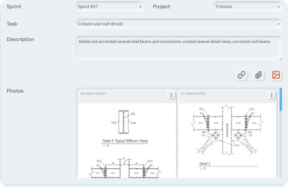
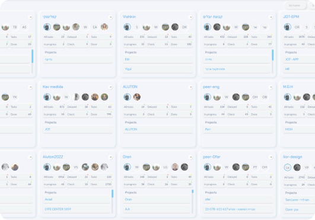
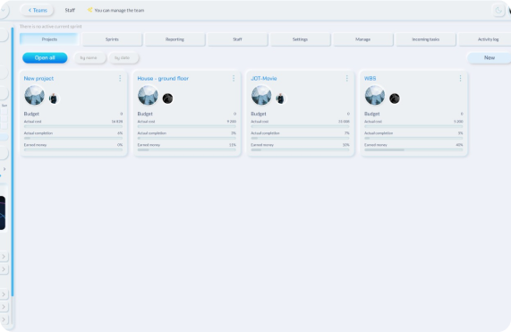
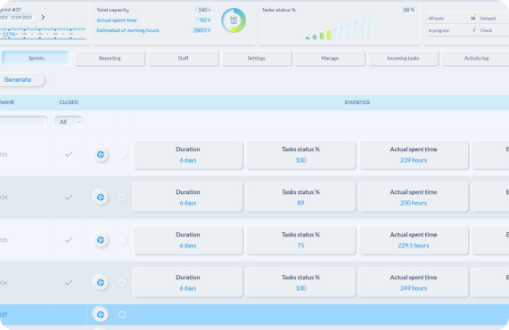

Kanban

A Kanban board visually organizes tasks into columns,
aiding teams in tracking and managing work progress
seamlessly. It organizes tasks into columns representing
different stages of the process, providing a clear overview
of work status and promoting efficient task prioritization.
WBS

A work breakdown structure (WBS) is a hierarchical
decomposition of a project into smaller, manageable
components, allowing for a structured and organized
approach to project planning and execution. By breaking
down the project into discrete tasks or work packages, a
WBS helps teams define scope, allocate resources, and track
progress more effectively.
Sprint

A sprint is a defined, concentrated phase within agile
project management, where a team works on a specific set of
tasks and goals, usually lasting two to four weeks. By
embracing sprints, teams can iteratively advance their
projects, deliver incremental value, and obtain consistent
input, fostering adaptability and streamlined project
results.
Gantt

A Gantt diagram is a visual project management tool that
showcases tasks and their timelines on a horizontal bar
chart, aiding in planning, scheduling, and tracking project
progress. By depicting task dependencies and their
sequential order, Gantt diagrams offer a comprehensive
overview of project timelines and help teams coordinate
activities more efficiently.
Daily reports

Daily reports are short summaries of a day's activities,
progress, and accomplishments, often used in business and
project management to keep customers informed about ongoing
work. These reports facilitate communication, highlight any
challenges or achievements, and provide a clear view of
daily operations to support informed decision-making..
Decision summary
A decision summary is a succinct overview that outlines the
key choices made during a decision-making process, along
with the rationale behind those choices. It serves as a
valuable reference document, capturing the essential
details of the decision and aiding in communication,
accountability, and future analysis
Team managment

Our app facilitates seamless collaboration among teams by
providing a centralized platform for task assignment,
progress tracking, and communication. With customizable
team roles and permissions, it ensures efficient project
coordination and accountability.
Project managment

Projects serve as organized containers for managing tasks,
timelines, and resources. Users can create, plan, and
monitor their projects efficiently, ensuring that they stay
on track and meet their goals with ease.
Dashboard

The dashboard provides users with a comprehensive overview
of their project's key metrics, progress, and upcoming
deadlines, all in one centralized location. It empowers
users to make informed decisions and prioritize tasks,
enhancing their project management efficiency.